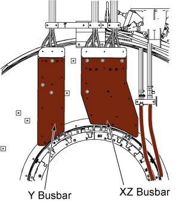
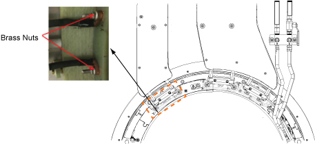
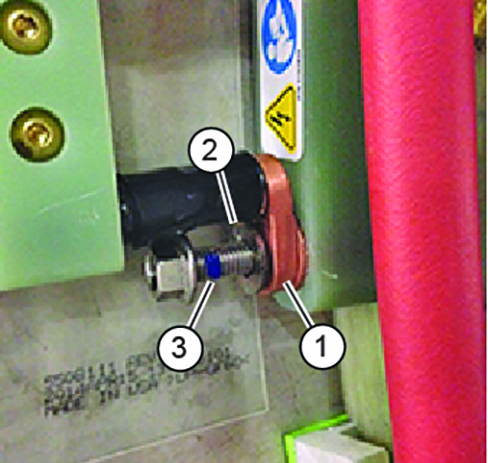
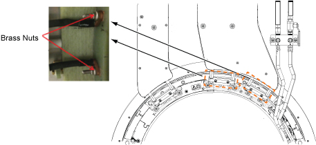

- 00000018WIA30BEC230GYZ
- id_156673411.36
- Jun 12, 2025 5:44:39 PM
VRMw cable busbar replacement
This procedure describes the replacement or installation process of the VRMw cable busbar.
Prerequisites
| Personnel requirements | |||
|---|---|---|---|
| Required persons | Preliminary requirements | Procedure | Finalization |
| 2 | 3 hours | 5 hours | 3 to 4 hours |
| Tools and test equipment | |||
|---|---|---|---|
| Item | Quantity | Part number | Manufacturer |
| Pair: Nonferrous Safety Shoes | 1 for each person | - | - |
| Safety Glasses | 1 for each person | - | - |
| Pair: Cut-Resistant Gloves | 1 for each person | - | - |
| Arc Flash PPE | 1 | - | - |
| Nonmagnetic Titanium Service Tool Kit, Large Set | 1 | 5112581 | - |
| Torque Wrench, 8 to 50 N m Adjustable, Nonmagnetic | 1 | 5534134 or 5534134-2 | - |
| Consumables | |||
|---|---|---|---|
| Item | Quantity | Part number | Manufacturer |
| LOCTITE #243 (50 ml) (check expiration date) | 1 | 5415261-3 | - |
| Loctite #271 (check expiration date) | 1 | 46-170684P2 | - |
| Alcohol Wipes | As needed | - | - |
| Black Sharpie Pen | 1 | - | - |
| Replacement parts | |||
|---|---|---|---|
| Item | Quantity | Part number | Manufacturer |
| XZ VRMw Busbar | 1 | Refer to FRU Manual | - |
| Y VRMw Busbar | 1 | Refer to FRU Manual | - |
| Required conditions |
|---|
|
Remove the rear endbell. See Rear Endbell Removal. |
| Safety | ||||
|---|---|---|---|---|
| ||||
| ||||
About this task
This procedure describes the replacement or installation process of the VRMw cable busbar.
There are two separate busbars; XZ busbar assembly and the Y busbar assembly. Typically, only one busbar will be replaced at one time.

Lockout/Tagout (LOTO)
About this task
Follow all safety LOTO procedures:
Procedure
Y busbar removal
Procedure
Remove two M10 brass nuts and Nord-Lock washers that secure the busbar lugs to the coil. Slide the busbar terminal lugs off of the studs at the coil.Notice  Note
NoteNever use the nonmagnetic torque wrench to loosen connections. The torque wrench has a range of 10 to 50 N m (8 to 35 lb-ft), and removing Nord-Lock© or Spiralock© threads may exceed the limit of this wrench and destroy the ratchet components.
Figure 4. Removing brass nuts and Nord-Lock washers - coil end 
Y busbar installation
Procedure
Notice Note Observe the following:Put a new Nord-Lock washer over the stud. Put two drops of Loctite 243 on the exposed thread.- Always use the new Nord-Lock washers that come with the FRU package. DO NOT reuse the old Nord-Lock washers.
- Nord-Lock washers consist of two pieces, which are generally glued together. Always use a complete set with two pieces joined together in correct orientation. DO NOT use a separated single piece. If the Nord-Lock washers are separated, or the nuts are untightened, discard the washers and replace them with new Nord-Lock washers only. If new Nord-Lock washers are not available, contact the Online Center for further instructions.
Figure 9. Nord-Lock washers 
1 Wrong (do not use separated washers) 2 Correct
Do not get Loctite on the Nord-Lock washer. Hand-tighten the nut.
Discard the old washers.
Figure 10. Loctite on stud 
1 Busbar terminal lug 2 Nord-Lock washer (installed after lug) 3 Loctite on stud Figure 11. Tightening brass nuts DANGER Notice Notice
Set the torque wrench to 34 N m (25 lb-ft). Install a 15 mm socket on the extension.Notice Note Make sure that the arrow on the torque wrench is visible. If the arrow is not visible, the torque wrench will not “click” when the proper torque is reached.Figure 12. Arrow on nonmagnetic torque wrench 
XZ busbar removal
Procedure
Remove four M10 brass nuts and Nord-Lock washers that secure the busbar lugs to the gradient coil.Notice NoteNever use the nonmagnetic torque wrench to loosen connections. The torque wrench has a range of 10 to 50 N m (8 to 35 lb-ft), and removing Nord-Lock© or Spiralock© threads may exceed the limit of this wrench and destroy the ratchet components.
Figure 19. Removing brass nuts and Nord-Lock washers - coil end 
XZ busbar installation
Procedure
Notice Note Observe the following:Place a new Nord-Lock washer over the stud. Put two drops of Loctite 243 on the exposed thread.- Always use the new Nord-Lock washers that come with the FRU package. DO NOT reuse the old Nord-Lock washers.
- Nord-Lock washers consist of two pieces, which are generally glued together. Always use a complete set with two pieces joined together in correct orientation. DO NOT use a separated single piece. If the Nord-Lock washers are separated, or the nuts are untightened, discard the washers and replace them with new Nord-Lock washers only. If new Nord-Lock washers are not available, contact the Online Center for further instructions.
Figure 24. Nord-Lock washers 1 Wrong (do not use separated washers) 2 Correct
Do not get Loctite on the Nord-Lock washer. Hand-tighten the nut.
Discard the old washers.
Figure 25. Loctite on stud 1 Busbar terminal lug 2 Nord-Lock washer (installed after lug) 3 Loctite on stud Figure 26. Tightening brass nuts DANGER Notice Notice
Set the torque wrench to 34 N m (25 lb-ft). Install a 15 mm socket on the extension.Notice Note Make sure that the arrow on the torque wrench is visible. If the arrow is not visible, the torque wrench will not “click” when the proper torque is reached.Figure 27. Arrow on nonmagnetic torque wrench
Finalization
Procedure
- Replace all covers that were previously removed.
- Remove lockout/tagout to turn the system ON. See Removing LOTO - Integrated System Cabinet (ISC).
- Do DQA calibration to make sure geometry is correct. See Doing DQA calibration with the DQA III phantom.